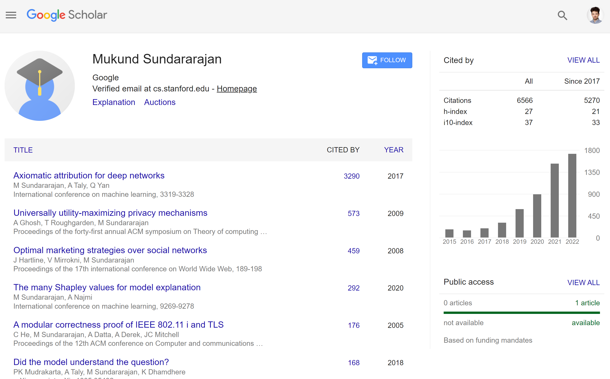
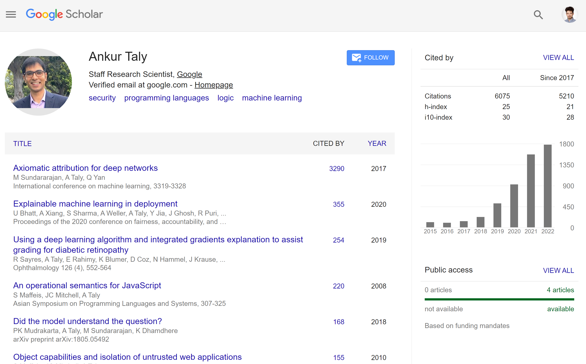
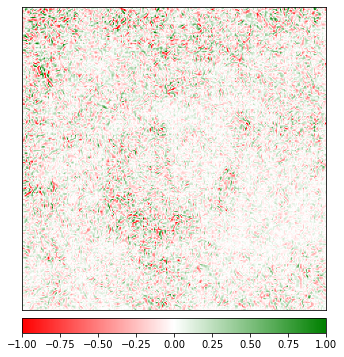
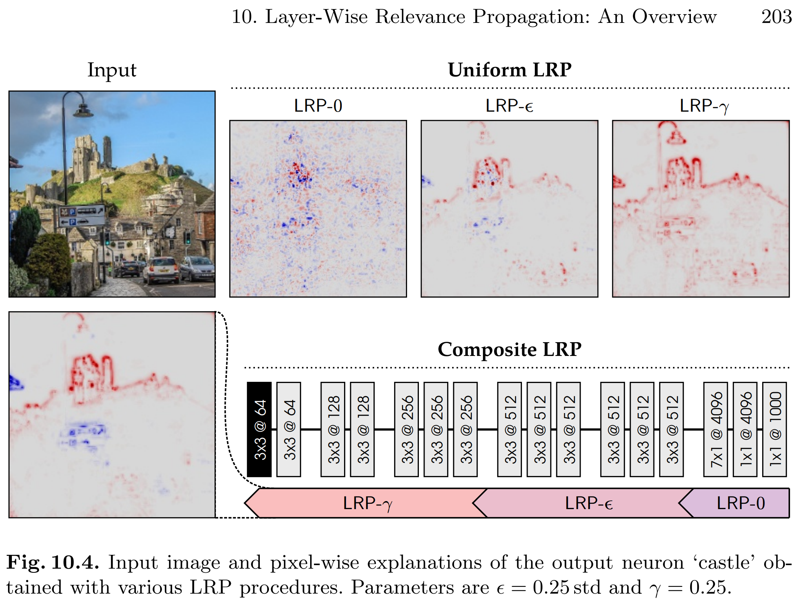
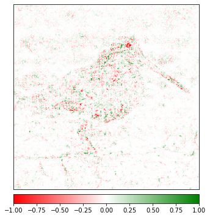
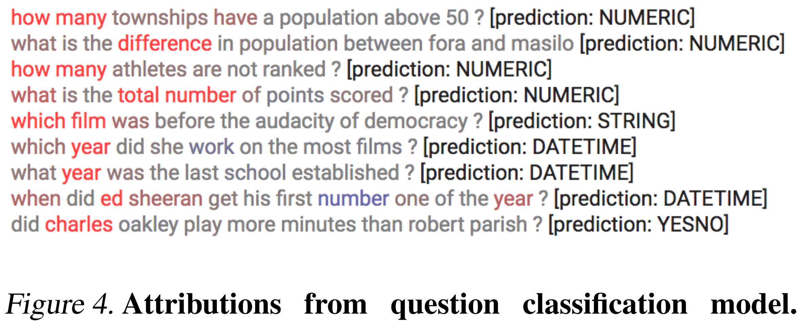
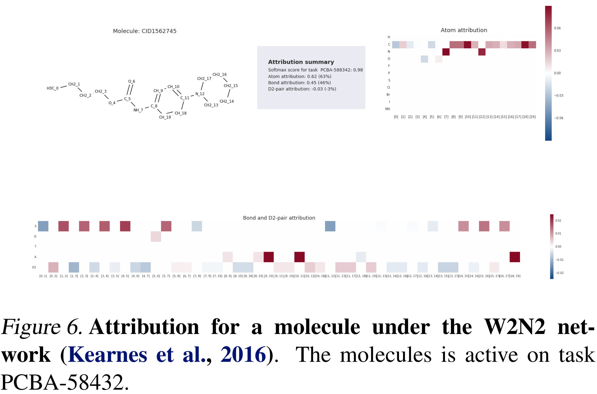
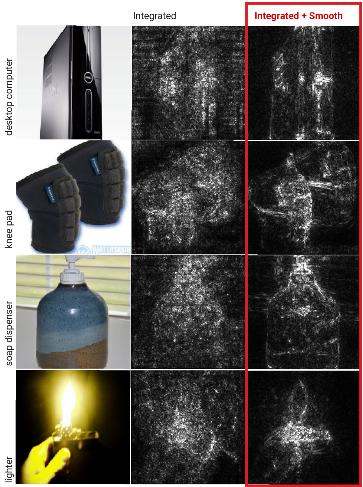
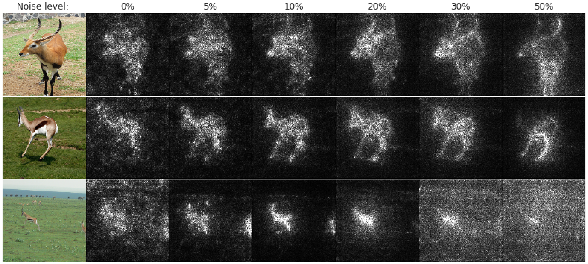

Explanations specific to neural networks
eXplainable AI
Hubert Baniecki
Machine Learning @ MIMUW 2022

Paper of the day
Axiomatic Attribution for Deep Networks
- Today we will talk about Integrated Gradients, one of the explanations specific to neural networks.
- It was introduced in Axiomatic Attribution for Deep Networks by Mukund Sundararajan, Ankur Taly and Qiqi Yan at ICML 2017 (similar time to SHAP, after LIME in 2016).
Integrated Gradients paper in numbers
- Since 2017 till now (2022), the paper has 3290 citations showing a breakthrough in explaining neural networks.
- The paper not only provides intuitive and simple to implement feature attribution method, but also
- defines two desirable axioms for such methods in general: Sensitivity and Implementation Invariance.


Gradient-based explanations
Neural networks are differentiable!
For training:
- with respect to model parameters (weights);
- the goal is to measure how changing weights impacts the change in predictions.
\[ \frac{\partial f}{\partial w} \]
For explaining:
- with respect to model input (features);
- the goal is to measure how changing inputs impacts the change in predictions.
\[ \frac{\partial f}{\partial x} \]
Gradient aka Saliency Map
Algorithm:
- Feed an observation \(x\) forward through the network \(f\).
- Compute gradient of model prediction \(f_c\) for class \(c\) with respect to input \(x\).
\[ \frac{\partial f_c}{\partial x} \] 3. Visualize the gradients!
Explaining ResNet34 trained on ImageNet

What do you see?
Main disadvantage of vanilla gradient
Vanilla gradients provides saturated feature attributions and may attribute 0 to important features.
Consider a network with one ReLU neuron and one feature input:
\[ f(x) = 1 − \text{ReLU}(1 - x).\]
Derivative of \(f\) equals 0 when \(x > 1\) and 1 when \(x < 1\). We have
\[ f(0) = 0,\; f(1) = 1,\; f(2) = 1, \] and
\[ f'(0) = 1,\; f'(1) \approx 0,\; f'(2) = 0. \]
Intuitively, gradients break Sensitivity because the prediction function may flatten at the input and thus have zero gradient despite the function value at the input being different from […] baseline. Sundararajan et al. (2017)
LRP (2015 with later improvements)
A great paper on the topic: Layer-Wise Relevance Propagation: An Overview.


Integrated Gradients (IG)
Formulation of IG [1/2]
Setup:
- Consider a straightline path in input space \(R^n\) from the baseline \(x'\) to the input \(x\). In practice, it may consist of 50-300 steps.
- Baseline can be an input consisting of zeros. An appropriate choice of baseline depends on a use-case, is part of the engineering, and a current research question to study.
Algorithm:
- For each step of the path compute vanilla gradients.
- Accumulate these gradients using an integral.
- Visualize integrated gradients!
Explaining ResNet34 trained on ImageNet

Question: What do you see?
Formulation of IG [2/2]
Note: \(x_i\) denotes the \(i\)-th feature, \(\alpha\) encodes steps on the path.
\[ \text{IG}_i(x) := (x_i - x_i') \times \int_{\alpha=0}^{1} \frac{\partial f(x' + \alpha\times(x-x'))}{\partial x_i} \,d\alpha \]
Question: How to approximate this integral?
Axioms [1/2]
1. Completeness
IG satisfy completeness meaning that the feature attributions add up to the difference between the output of \(f\) at the input \(x\) and the baseline \(x'\).
\[ \sum_{i=1}^{n} IG_i(x) = f(x) - f(x') \]
2. Sensitivity
IG satisfy Sensitivity meaning that
for every input and baseline
that differ in one feature but have different predictions
the differing feature should be given a non-zero attribution.
Completeness implies Sensivity because the latter refers to a case where the baseline and the input differ only in one variable. Then Completeness asserts that the difference in the two output values is equal to the attribution to this variable. Sundararajan et al. (2017)
Note that vanilla gradient breaks this axiom (see Slide 9).
Axioms [2/2]
3. Input Invariance
IG satisfy Input Invariance meaning that it can explain any differentiable neural network and feature attributions are always identical for two functionally equivalent networks.
Two networks are functionally equivalent if their outputs are equal for all inputs.
Note that LRP breaks this axiom because it depends on network architecture.
IG: examples from Sundararajan et al. (2017)
NLP

GNN

How to improve gradient-based explanations?
SmoothGrad
a simple and powerful improvement to feature attributions
proposed by Smilkov et al. (2017)
Algorithm:
- Generate multiple samples of the observation of interest by adding noise to it.
- For each new observation sample compute feature attributions, e.g. Integrated Gradients.
- Average the resulting feature attributions.
\[ \text{SmoothIG}(x) := \frac{1}{N} \sum_{i=1}^{N} \text{IG}(x + z_i) \] \[ z_i \sim \mathcal{N}(0,\,\sigma^{2}) \]
Parameters:
- number of samples \(N\) (more than 50)
- distribution of noise, variance \(\sigma^2\) (about 10-20%)
SmoothGrad: examples from Smilkov et al. (2017)
Comparison

How much noise?

Take-home message
- Various methods have been proposed to explain specifically neural networks using their known properties, e.g. gradients, weights, layer structure.
- Integrated Gradients has desirable properties and combined with SmoothGrad serves as a go-to baseline for feature attributions.
- Always consider the parameters of the explanation algorithms.
- KISS: keep it simple stupid!
Materials
- For more information on explanations specific to neural networks, refer to Chapter 10: Neural Network Interpretation of the IML book by Christoph Molnar.
- Implementation of the methods is available in Captum: Model Interpretability for PyTorch
- Legacy examples
- Step-by-step tutorial: How to Implement Integrated Gradients in TensorFlow

eXplainable AI – Explanations specific to neural networks – MIM UW – 2022